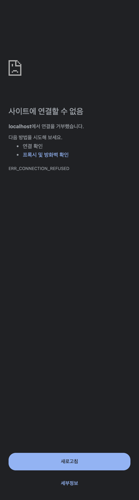
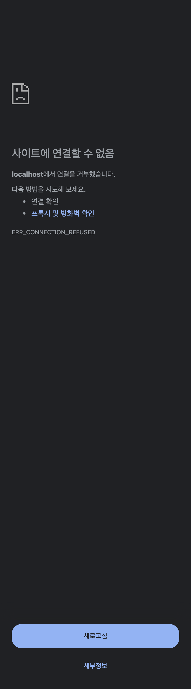

HTML/CSS Implementation · Pixel Perfect · 2026-09-05
디자인 구현 4방향 — 한국어 카피 버전
Stitch 썸네일이 아닌 직접 작성한 HTML/CSS를 브라우저에서 렌더링한 결과물. 780px @ 2x · 픽셀 퍼펙트 · 웹폰트 포함. 각 파일은 실제 구현 코드이므로 그대로 개발에 사용 가능.
SWISS DATA-EDITORIAL

Swiss Data-Editorial
순백 · 먹 텍스트 · 시그널 레드 마침표 · FIG. 도판 넘버링 · 박물관 캡스. 데이터 저널리즘 무드. "연구기관의 정밀함" 포지셔닝.
em-dash 0금지어 0FIG. 01신뢰 최대
PASTEL CALM

Pastel Calm
라벤더 페이퍼 + 세이지/클레이 원형 배지 + 라운드 28px CTA + 부드러운 섀도. 캘름·헤드스페이스 무드. 글로벌 여성층 강점.
em-dash 0원형 배지캘름접근성 최대
BLUEPRINT TECHNICAL

Blueprint Technical
청사진 블루 #16324F + 백색 라인워크 · IBM Plex Mono · [SYS]·[REF]·[DIM] 콜아웃 · 타이틀 블록. "판정은 코드" 철학의 도면화.
em-dash 0SYS.VER.01타이틀블록근거 태그
NEO-BRUTALIST ★

Neo-Brutalist Editorial
오프화이트 #F4F1EC + 하드 3px 보더 + 블랙 오프셋 섀도 8px + 주황 #FF4D00 CTA · 스탬프 라벨 · 모노 마이크로라벨. 임팩트 최대.
em-dash 0스탬프 라벨임팩트 최대NO. 000847
| 방향 | 강점 | 적합 페이즈 |
|---|---|---|
| Swiss Data-Editorial | 신뢰·정밀·데이터 저널리즘 | 메인 서비스 (전환 중시) |
| Pastel Calm | 접근성·친화력·글로벌 여성층 | 온보딩·결과 화면 |
| Blueprint Technical | 엔지니어링·근거 시각화 | 리포트·분석 상세 |
| Neo-Brutalist | 임팩트·차별성·공유 카드 | 랜딩·공유 카드 |
하이브리드 권장: Swiss 본체(신뢰) + Neo-Brutalist 공유카드(임팩트) + Blueprint 근거 태그(정밀함) — 페이즈별로 최적 문법 배치.